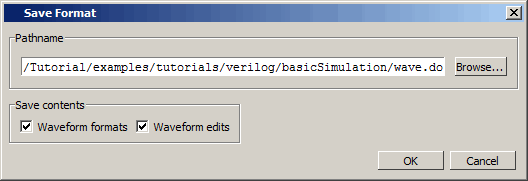

You
can save the commands that Questa SIM used
to create the waveforms. You can load this “format” file at a later
time to re-create the waves. In this exercise, we will save the
commands, quit and reload the simulation, and then open the format
file.
Procedure
- Save
the wave commands to a format file.
- Select in the menu bar
to open the Save Format dialog box.
Figure 1. Save Format Dialog
Box
The
default file name is wave.do.
- Click
the OK button to save a DO file named wave.do to
the current directory.
- Close
the Wave window by clicking Close icon (x) in the top right corner
or by selecting in
the menus.
- Quit
and then reload the design.
- In
the Main window, select , and click Yes
to confirm you want to quit simulating.
- Enter
the following command at the Questa SIM>
prompt.
- Open
the format file.
- Select to
open the Wave window.
- Select from
the menu bar.
- Double-click wave.do to
open the file.
The
waves you created earlier in the lesson reappear. If waves do not
appear, you probably did not load the counter design
unit.